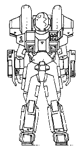

The following material is from
THE THIRD INVID
WAR, a fan supplement by
Dave Deitrich and
Chris
Meadows. Please feel free to use, copy, and distribute
it as you see fit. All we ask is that you give proper credit to us and do not
claim that it is your own work. Comments and suggestions are welcome.
THE VR-135 FORAGER

BACKGROUND
The VR-135 Forager was designed specifically as a survival mecha for crashed
mecha pilots. It is one of the most durable and maintenance-free mecha ever
designed, requiring little in the way of ammo or supplies. The internal
systems of the Cyclone are also extremely simple in design, with instructions
often stenciled right on the parts themselves. Skilled bio-maintenance
engineers have actually disassembled and reassembled VR-135s in mere minutes.
Many Foragers made it to Earth via the Icarus Recon Mission, and some clever
bio-maintenance engineers started adapting VR-135s to their own purposes,
producing several "home-brew" designs. Some of the stories of what the
Foragers could be modified to do border on the unbelievable to this day. All
REF mecha are now equipped with at least one VR-135 for the pilot in the
event of a crash landing.
The VR-135 Forager is boxy in appearance, like the VR-152, but is smaller and
less bulky. The cyclone has a very "utilitarian" look to it, being designed
expressly for the survival of the pilot and little else. Despite its smaller
appearance, the VR-135 is perhaps the most durable of all the new cyclones.
Forager Pilots usually have the standard CVR-4 body armor, since it is the
standard armor of mecha pilots.
SCHEMATICS
 Click on the icon to the left to view some pictures from the REF Cyclone
maintenance guide, document REF-8812-334-1201.
Click on the icon to the left to view some pictures from the REF Cyclone
maintenance guide, document REF-8812-334-1201.
RPG STATS
Model: VR-135 Forager
Class: 2nd Generation M.O.S.P.E.A.D.A. Survival Mecha
Crew: One
M.D.C. BY LOCATION:
Motorcycle Mode Battlesuit Mode
---------------------------- ----------------------------
Headlight 5 Tires (2, rear) 5
Front Tire 5 Thrusters (rear) 60
Rear Tire 5 Forearm Shields (2) 50
Storage Box (2) 2 each Leg Shields (2) 100
Thrusters (rear) 60 Head 70
(1) Main Body 300 (1) Main Body 300
M.D.C. OF BODY ARMOR:
(2) CVR-4 (Standard Military Armor) 70
(2) CVR-3 (Standard Military Armor, Support Personnel) 50
NOTES:
- Depleting the M.D.C. of the Main Body will shut the mecha down
completely.
- Depleting the M.D.C. of the body armor will destroy it and very likely
kill the wearer (10% chance of survival).
The Second Generation Cyclones are equipped with laser resistant
ceramic armor, so laser weapons do only HALF damage. This does NOT
include any other energy attacks such as particle beams or ion blasts,
nor does it help against explosives.
CVR-4C Heavy Armor is incompatible with the VR-135 Forager.
SPECIFICATIONS
- Motorcycle Mode:
- Maximum Speed: 210 mph (336 kmph)
- Cruising Speed: 80 mph (128 kmph)
- Turbo Boost Fwd: 40 ft (12 m) horizontal
- Turbo Boost Up: 20 ft (6 m) vertical
- Battloid Mode:
- Running: 60 mph (96 kmph)
- Flying: 180 mph (288 kmph)
- Leaping: 20 ft (6 m)
- Thruster Leap: 100 ft (30 m)
- Height:
- Battloid: 7.0 ft (2.1 m)
- Motorcycle: 3.6 ft (1.1 m)
- Width:
- Battloid: 3.4 ft (1.0 m)
- Motorcycle: 1.6 ft (0.5 m)
- Length:
- Battloid: 3.1 ft (0.9 m)
- Motorcycle: 5.0 ft (1.5 m)
Weight:200 lbs (90 kg)
- Cargo:
- The VR-135 has detachable cargo boxes that are connected to the
rear of the bike like saddlebags. The size of each container is 18
inches tall by 20 inches wide by 18 inches deep. In addition, the VR-135
has four concealed pouches on the sides of the mecha, in the thigh armor
plates (where the GR-187 is located on other Cyclones). These pouches are
each 6 inches long by 4 inches wide by 2 inches deep, and are usually used
to hold items like medical kits, tools, or extra ammo clips. A passenger
can also ride seated behind the driver. The VR-135 can hold 250 lbs (110 kg)
in addition to the rider. Reduce maximum speed by 20% for every additional
50 lbs (22 kg) over the limit and add -1 to dodge.
Unlike its predecessors, the storage boxes of the new cyclones do NOT
drop off when they convert to battloid mode. Instead, the boxes are
shifted to the lower back, just below the thruster packs and covering
the butt of the pilot. The passenger, however, isn't so lucky. The thigh
pouches are a physical part of the cyclone and do not disconnect. They are
fully protected by the cyclone's thigh armor.
Main Engine: FF-600 Fusion/Protoculture Engine
- Range:
- 2 protoculture cells will power the cyclone for approximately 12
months before needing refueling. The backup system can operate on 1
protoculture cell for 6 months at no penalty. Constant flying will
drain the protoculture cells twice as quickly for all models. As a
final backup, the cyclone can run on fusion power alone for up to 400
miles on a full tank of fuel, but maximum speed is reduced 15% and
constant flying is impossible. The fusion engine runs off hydrogen, so
any hydrogen-rich liquid (like water or ammonia) can be used for fuel.
Extra gas from the fusion engine is released through an exhaust port.
- Color Scheme:
- Normally REF mecha are painted in camouflage schemes that match the
location where they are stationed. However, due to the nature of the
Forager's purpose it is hard to predict exactly where the cyclone will
be used. Most Foragers are painted in a dull tan/brown color scheme
(similar to desert mecha), but some mecha pilots take it on themselves
to customize their syrvival cyclones to their tastes. As usual,
each cyclone is streamlined in a color corresponding to the
position of the pilot. Enlisted Pilots have their cyclones streamlined
in Blue, Aces and low-ranking Officers in Red, and Platoon Leaders in
Green.
WEAPON SYSTEMS
- GR-103 MINI-MISSILE LAUNCHER (2). The main weapon of older
cyclones has remained mostly unchanged in the newer models. The launchers
have been updated with newer technology which makes them more
resilient to damage and easier to repair (+20% to repair rolls). In
motorcycle mode, the two missile launchers are side by side in the
nose of the cycle. In battloid mode, the missile launchers are
divided, with one on each shoulder of the mecha. Both launchers hold
6 mini-missiles (usually armor-piercing).
- Primary Purpose: Assault
- Secondary Purpose: Anti-Aircraft, Anti-Mecha
- Missile Type: Any type of REF Mini-missile EXCEPT Plasma.
High-explosive are standard-issue for the VR-135 Battler II.
- Mega-Damage: Varies with missile type.
- Rate of Fire: One at a time or in volleys of two, four, six, or
all. Remember, a volley counts as one melee attack regardless of the
number of missiles.
- Range: Varies with missile type; 20 ft to 1 mile.
- Payload: 6 missiles per each launcher, for a total capacity of 12.
- MODULAR WEAPON SYSTEMS. As with all REF Cyclones, the arm shields
of the VR-135 Forager are designed to interface with one of the GR-series
weapon modules. One weapon module can be mounted on each forearm shield,
and it is not necessary to mount the same modules on each shield. The
Cyclone's onboard computer system will automatically recognize which weapon
module is installed and adjust the HUD displays on the pilot's helmet
accordingly. Any GR-series weapon module can be used.
Typical VR-135s are assigned two
GR-215 MISSILE LAUNCHER/BEAM CANNON units, though different weapons
may be assigned if necessary or desired. Click HERE for a complete listing of cyclone weapon
modules.
- Hand-to-Hand Combat. Punch does 1D4 M.D. Kick does 1D4 M.D. (The
VR-135 Forager has an equivalent strength of PS 50) Leap Kick
does 2D4 M.D. Body Flip or Body Block does 1D4 M.D.
- Any type of hand-held weapon can be fired by the pilot while in
cyclone armor, including the new Gallant
1000 Multi-Weapon System.
- Any other cyclone weapon pod can be substituted for the GR-215, both
from the newer cyclone models and the older ones.
STANDARD SENSORS AND EQUIPMENT FOR ALL MILITARY CYCLONES
- LASER-RESISTANT CERAMIC COATING: 1/2 damage from laser attacks.
- ENHANCED RADAR WITH HEADS-UP DISPLAY: Range: 10 miles. Can identify
and track up to 40 different targets.
- TARGETING COMPUTER: Uses helmet display instead of retractable sensor
of older models. Provides the pilot with +3 to strike with missiles and
+2 to strike with other weapon systems (Beam Cannons, Lasers, etc.).
Range: 4000 ft (609 m).
- RADIO COMMUNICATIONS: Boosts standard radio in CVR-series armors to
10 mile (16 km) range.
- MISCELLANEOUS INDICATORS: Altitude, Speed, Power status, Time, Date,
Direction, etc. All controlled by on-board computer.